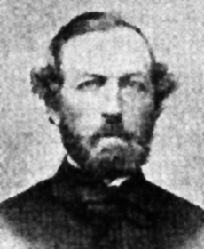

|
Mary Virginia "Jennie" Wade was the only Gettysburg
civilian killed during the battle, but she was not the only
citizen who was hit while the fighting raged with bullets,
shells and canister flying in all directions.
Three men were wounded in town by stray shots or by
Confederates who assumed they were either Federals or were
up to no good. Jacob Gilbert, a Gettysburg resident for
many years, was struck in the upper left arm while walking
on Middle Street. A "Mr." Lehman of Pennsylvania College
was wounded in the leg. R.F. McIlhenny was injured in his
ankle. And Amos Moser Whetstone, a Seminary student who
boarded with "old Mrs. [Nancy] Weikert" on Chambersburg
Street, was shot in the thigh by a sharpshooter on July 4.
Two civilians who were wounded as they voluntarily joined
military units were John Burns and J.W. (or C.F.) Weakley.
By the end of the first day of fighting, 71-year-old John
Burns had been wounded three times: in his upper thigh, in
the leg and in Ws left arm. None of the wounds proved to be
serious. Weakley was a boy from Maryland who had followed
the First Corps from Emmitsburg, Maryland, begging all the
while to be allowed to enlist in the army. About fifteen
years old at the time, he was taken in by the veterans of
Company A of the 12th Massachusetts Infantry who gave him a
makeshift uniform and weapon. Weakley was wounded in the
arm and thigh as he fought with the regiment, although he
|

Rev. Horatio S. Howell
|
had not yet been mustered into service. Months later, he
officially was enrolled in a U.S. Maryland regiment and was
discharged for disability in 1864.
On July 1, an incident occurred involving the fatal
shooting of a chaplain, a non-combatant with the 90th
Pennsylvania Infantry. Chaplain Horatio S. Howell was
standing on the steps of the Christ Lutheran Church on
Chambersburg Street when he was shot and instantly killed by
a Rebel soldier.
On July 3 at about one o'clock, a shell from one of the
signal guns preceding Pickett's Charge exploded in William
Patterson's barn on the Taneytown Road. The shell tore off
the arm of a fourteen-year-old African-American boy who was
the servant of a New York soldier. And James Godman, an
African-American man in the Southern army at Gettysburg, was
killed in action during the battle.
A number of civilian casualties also occurred after the
battle, and many are related to the fighting that had
occurred.
The July 7, 1863 edition of the Adams Sentinel claimed
that " ... Edward M., son of Alexander Woods, [was] shot
accidentally by Ws brother, while playing with a gun picked
off the battlefield.'
Albertus McCreary recalled in McClure's in 1909, "A
schoolmate of mine found a shell, he struck it upon a rock
and made a spark which exploded the shell. We carried him
to his home, and the surgeons did what they could, but he
died in about an hour." McCreary also remembered, 'The any
other accident that I witnessed happened a year after the
Battle. I was passing along High Street, and had reached
Power's stoneyard, when I heard a terrible explosion behind
me. I saw a young schoolmate lying on Ws back with his
bowels blown away. Near him was a man almost torn to
pieces, his hands hanging in shreds."
In 1929, Charles M. McCurdy's memoirs recalled that two
of his chums were killed several months after the battle
while trying to open unexploded artillery shells.
Another episode was registered in September of 1863 when
Michael Crilly was engaged in an effort to unload a shell,
it exploded and seriously injured Ws hand, requiring the
amputation of three fingers. And in March of 1864, several
fifteen-year-old boys were amusing themselves with a gun
from the battlefield, when the contents discharged and
entered the head of a little seven-year-old African-American
girl, inflicting a mortal wound. In June of that year, Adam
Taney, Jr., residing in Fairfield, had a serious accident
while attempting to open a shell found in a field. The
shell exploded and some of the fragments struck him in the
feet, which possibly crippled him for life.
Source: Cindy L. Small, The Jennie Wade Story: A True and Complete Account of
the Only Civilian Killed During the Battle of Gettysburg (Gettysburg, PA: Thomas
Publications, 1991), 75-77.
|